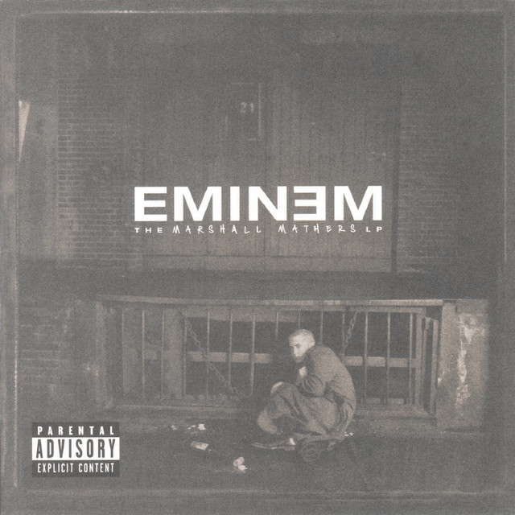
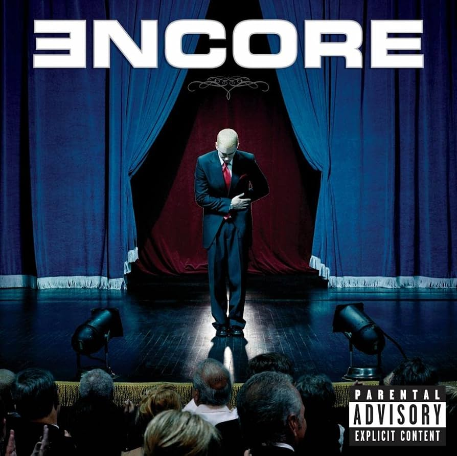
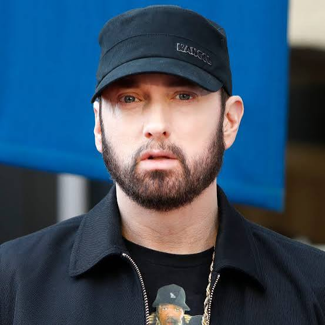
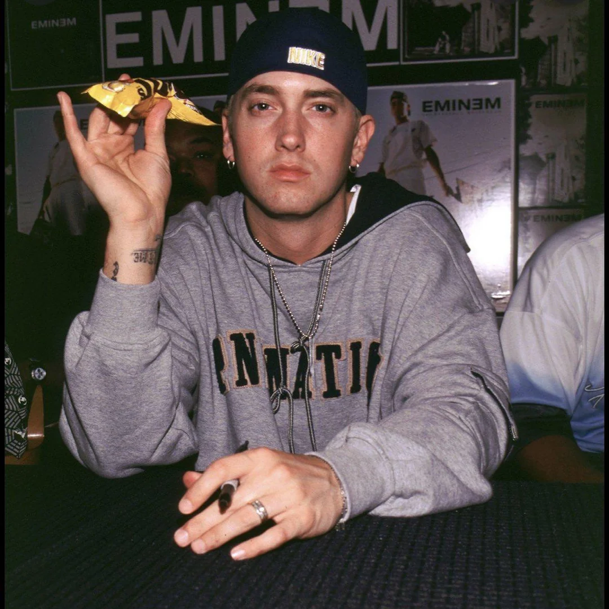

2002

2000
2009

2004
Marshall Bruce Mathers III


Eminem, vars riktiga namn är Marshall Bruce Mathers III, föddes den 17 oktober 1972 i USA och växte upp i Detroit. Han började rappa som ung och fick sitt stora genombrott i slutet av 1990-talet efter att ha blivit upptäckt av Dr. Dre. Med album som The Marshall Mathers LP och The Eminem Show blev han en av världens mest kända rappare. Han är särskilt känd för sitt snabba flow, avancerade rim och personliga texter. Eminem har vunnit flera Grammy Awards och en Oscar för låten "Lose Yourself" från filmen 8 Mile.
2002

2000
2009

2004
Eminem betyder mycket för mig eftersom hans låtar hjälper en i tuffa eller stressiga situationer och jag älskar hans texter, melodier och tempo